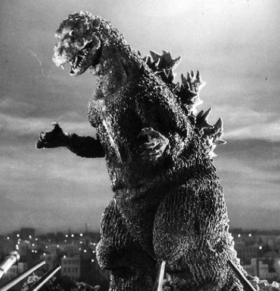

The 1950s
Home
1950's
1970's
1990's
2000's
Modern
The Monsters on this page are very old but are some of the most well known monsters of all time. The Monster in the Black Lagoon: the monster in the black lagoon is a classic and has starred in the movies Revenge of the Creature and the movie The Creature walks Among Us. The Gill monster in these movies was played by Ricou Browning who is now 90 years old. Some Fun Facts about the Monster from the Black Lagoon is that the Creature was modeled from the Academy Award and the movies he starred in were partly shot in the Florida Panhandle. The Abominable snowman: The Abominable Snowman has starred in tons of Movies like Goosebumps, Abominable, The Abominable Snowman, etc. The Abominable Snowman is 6 feet tall and varies from 200lbs to 400lbs. Godzilla: Godzilla has starred in more than 20 movies and is an Icon for Monster Movies across the globe. Godzilla is ruffly 983 feet tall. Some Fun Facts about Godzilla: 1.His roar is made from a mix of sounds 2.Godzilla was originally going to be a mutated octopus 3.A Godzilla suit was stolen, then lost, then washed up on shore 4.A Monster like Godzilla could never actually exist. 5.Godzilla has a star on The HollyWood Walk of Fame
